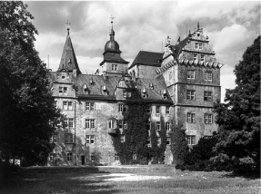
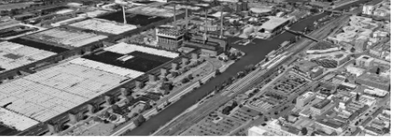
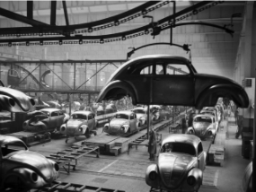
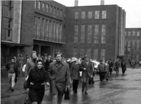
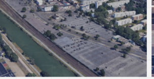
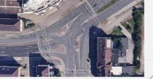
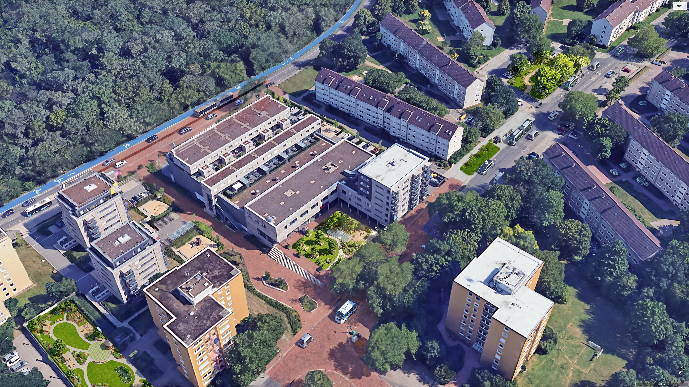

01
PLACEHOLDER


1938Fallersleben
02
PLACEHOLDER


1950sThe line
03
PLACEHOLDER



TodayParking fields
<TODAY>
01
A city that still runs on the private car.
Its best land given to storage and movement.
02
PLACEHOLDER
Surface lots hold the city's stationary cars.
→
PLACEHOLDER
Rush hour: one person, one car, one queue.
→
PLACEHOLDER
Oversized junctions cut neighbourhoods apart.
L-HUBThe Anchor
▸ click to explore


Before After68 hubs · catchments
<LOCATIONS>
Traffic & zones
<STRATEGY>
L · M · S network
<NETWORKS>